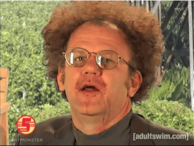
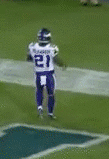
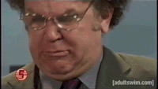

Week 5 is in the books and somehow Dan Man has worked his way to 4-1 while Brando is 2nd in scoring sitting in last place. Ain't this shit fun??
Other notable highlights from the last two weeks include O'Dell going out for the season, TE's continuing to not score points, and Peter actually won twice. Jason's worst ever record is safe.
There hasn't been any trade action the last two weeks so let's take a minute to look at some history. Let's look at a number
that should make everyone pretty happy.
Regular Season Records of Former Champions:
Tyler has survived a Dalvin Cook injury this long due to the emergence of AJ Green. Eventually Sterling Shepard is going to be the only wide out in NY, he could be a 2017 Bilial Powell, may not be your first option but someone on the team has to move the ball. This team should make the playoffs.

Did you guys know that Ethan is a Packer fan? Week in and out he's celebrating Packer touchdowns, loving Aaron Rodgers more then Gruden in the film room with a case of Corona and a tub of lube. Makes me sick. Dan's about 3 wins from a playoff spot and his new favorite team has a matchup with the Browns week 1 of the playoffs, this may be the year he sees round 2.
2 Dolphins rolling in the starting lineup makes me feel wrong to be kinda high on this team. They've been pretty healthy and Jay Ajayi hasn't been productive at all but they have been able to manage. If Mariota turns it around there isn't much of a weakspot, except maybe the dolphins offense.
Another team without much weakspots when the whole lineup is available. Gurley had three points against the Seahawks this week and your probably telling yourselves "It's okay, that's a tough Seahawks D, he'll bounce back". And while that may be true, guess who's in Seattle for the second round of the playoffs..
Bye Bye O'Dell, I'd accuse you of being a real waste of a pick but you helped get me a win and I'm thinking I'll be hovering around the every win counts position, so thanks! Next man up right, could really use some help right about now... is there someone at the door??

Bet Jordan would really like to start Crabtree of DeSean instead of Hunter Henry, who somehow got picked up for less then Ed Dickson. Jordan is fairly deep with talent, his bench has been scoring alot of points. They have actually outscored your starting lineup in both your losses and posted good number last week. This is a prime team to make a trade, lets see a little action people!
Benny has yet to crack triple digits. Which could turn out to be trouble down the line, points are gonna be a tie breaker for someone. I have a feeling Ben's regretting his trade with Trav, I'm guessing it won't be the last move for him.
I'd say sucks to suck but you really haven't. I feel like it's pretty typical for you to get alot of points against you for some reason but dude 530 is 110+ points more then anyone has scored on them. That's unreal, You should probably be even higher on this list. Fournette is a tank, Evans is solid and you have a the top scoring TE. I bet this shit has been pretty frustrating..
Here's another Gif: 
Trav has really turned the season around, but fuck this shit. Did you know Trav has also joined Packer fandom. I shit you not, the Brule Twins are giving high fives after Packer touchdowns. This is the real ugly side of fantasy.
Fandom asside Trav has turned his team around, who needs Brady when you have Alex Fucking Smith?
So did you guys know that Dak Prescott is actually a pretty good fantasy QB? I for one, did not. Connor has been riding quality Dak performances, and could easily be 3-2. I believe he's one of a handful of teams to not have a sub 60 points week on the season. He's also rolling with an interesting management strategy, I'm not sure where you came up leaving the kicker and defense spots open till gameday idea but sometimes you just gotta try something different.
Kush Rockets have been real up and down this season. I knew Amari Cooper was struggling, I did not realize just how much that struggle had been. 17.8 pts on the season, you'd think he played TE. The Raider combo that was so threatining on paper hasn't really panned out. Speaking of not panning out, Tarik Cohen has been good. El. Oh. El.
Joe Mixon is coming into form, pairing him with Julio/Hogan/Hyde should keep the Degenerates competitive. Speaking of degenerates, what's the wager on the matchup with the Kush Rockets this week? How confident are you in Mitchel "Kissing Titties" Trubisky? If your asking my opinion, that's a brutal play and your drinking too much of that Barstool Kool-Aid. But who cares about my opinion right?!
Snaggz has scored less points every week since week one. That's not a great trend. I bet Jacox would be interested in Antonio Brown, just thinking outloud. Is Doug Matrin here to save your season? Probably not. I'll say that this is a big week for Jason, if you don't post a decent number and turn things around with a win, your going to have an uphill climb to make the playoffs. Can't let that 3 game losing streak extend too much longer.
Props for getting two wins, Cam and LeVeon have really picked up the slack for you. That being said you still have Eddie Lacy (8.3 pts on the season), which I find very interesting. AP won't be ready to play this week, you don't have a defense or TE that can play this week. So while I applaud the effort in working the waiver wire and getting a couple wins, there's still lots of work to do. Unless your content with not being the worst team ever. How the fuck did Snaggz only win one game in a season?!